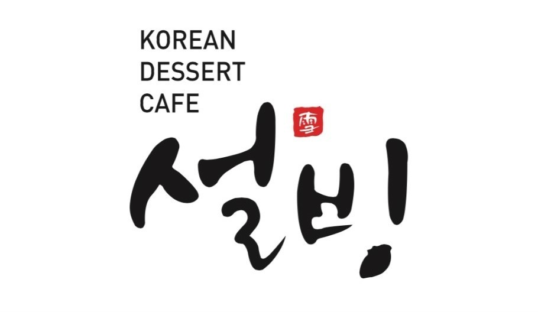
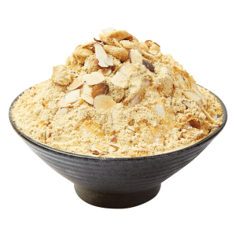
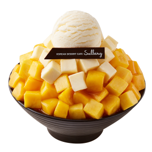
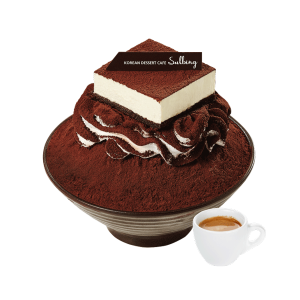
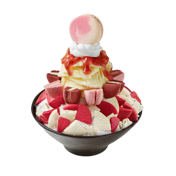
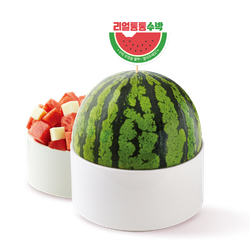
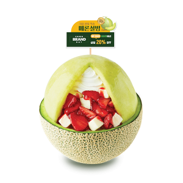

설빙

설빙은 한국의 디저트 카페 중 하나로, 주로 빙수, 차, 토스트 등을 판매합니다. 대표적인 상품은 '설빙(雪氷)'이라는 이름에 걸맞게 빙수이며, 기존 빙수와
달리 얼음 대신 우유로 빙수를 만들고, 『빙수는 얼음에 팥과 시럽을 넣고 섞어 먹는 것』이라는 기존 관념을 깨고 팥 대신 콩가루,
여러 과일(망고, 블루베리, 딸기 등) 등을 사용한 여러 메뉴가 있어서 국내 뿐 아니라 중국, 태국, 일본, 필리핀 등 여러 국가에서도 호평을 받고 있습니다.
대부분의 빙수를 시키면 연유를 함께 주는데, 이것은 빙수의 윗부분을 조금 걷어먹고, 빙수가 넘치지 않을 정도가 되면 조금씩 뿌려서 섞어가면서 먹으면
맛있게 먹을 수 있습니다.
설빙에는 가장 처음 나와 인기를 끌게 된 메뉴인 '인절미설빙'부터 '애플망고치즈설빙', '티라미수설빙', '딸기마카롱설빙', '리얼통통수박설빙',
'딸기치즈메론설빙', ...등 다양한 메뉴로 구성되어 있습니다. 또한, 특정 기간에 잘 나오는 과일을 이용한 시즌 한정 메뉴도 출시합니다.






두끼떡볶이
'두끼떡볶이'라는 이름의 유래는 『떡볶이로 한끼! 볶음밥으로 두끼!』라는 의미로, 떡볶이부터 볶음밥까지 누구나 자유롭게 다양한 재료를 가지고
직접 조리해 즐길 수 있는 『즉석떡볶이 무한리필 뷔페』입니다. 무한리필 이기때문에 다음 사람들이 기다릴 경우 1시간 30분동안 식사할 수 있습니다.
또한, 과다하게 재료를 사용해 버려지는 것을 방지하기 위해 음식을 【어묵그릇 이상】남기는 경우 환경부담금 2,000원이 부과됩니다.
★ 떡볶이를 만드는 과정 ☆
※ 떡(쌀떡)→어묵→야채→면사리 순으로 넣고, 밀떡은 퍼질 수 있으니 가장 마지막에 넣는 것이 좋습니다.
- 적당량의 육수를 넣어주세요.
- 마음에 드는 소스를 넣어주세요.
- 오늘 맘에 드는 떡 투하!
- 먹고싶은 사리들도 추가~
- (선택) 날개퐁듀치즈 추가
- 두끼 떡볶이 완성!
★ 볶음밥 만드는 과정 ☆
떡볶이를 먹고 남은 소스에 볶음밥 재료를 넣고 볶으면 맛있는 볶음밥 완성!
- 냄비에 밥을 적당량 담아주세요.
- 옥수수, 김치, 김가루를 넉넉히 넣어주세요.
- 고소한 참기름을 한바퀴 돌리고~
- 슥-슥 맛있게 볶아준 뒤에!
- (선택) 눈꽃치즈 추가
- 두끼 볶음밥 완성!